頑張りすぎる毎日に、ふっと緩む時間を。
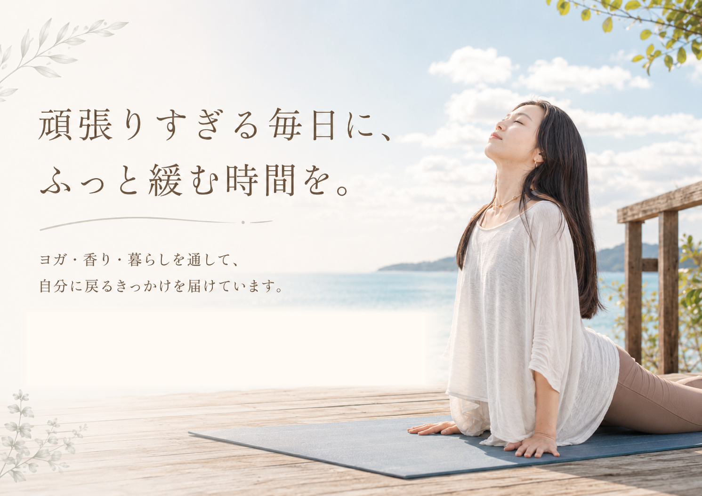
こんなふうに感じていませんか？
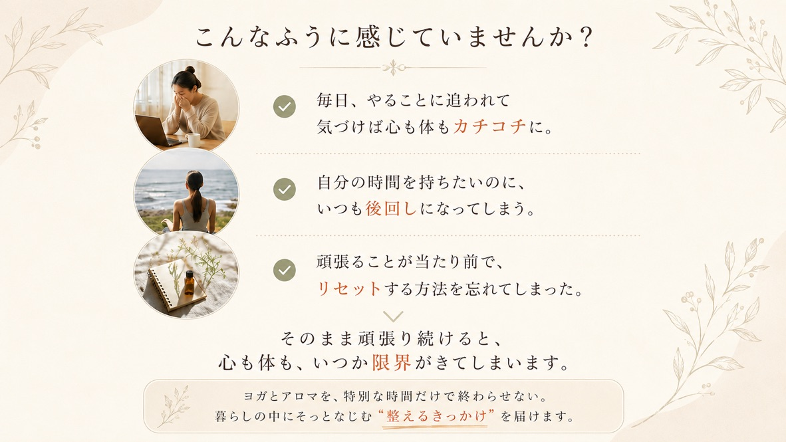
Concept
ヨガと香りで、
暮らしの中に
余白をつくる。
ヨガは、体を動かすだけではなく、
自分の内側にそっと戻る時間。
香りは、日常の中で気持ちを切り替える
小さなスイッチ。
忙しさの中で置き去りにしていた呼吸や
感覚に気づき、頑張る自分を責めずに
緩められる場所を届けたいと思っています。
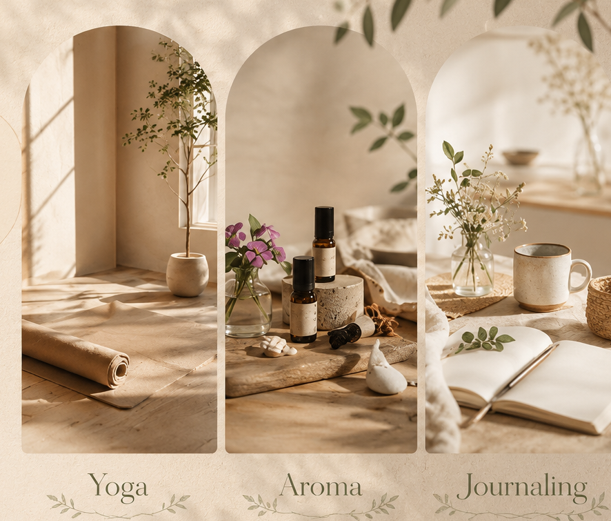
What I value
大切にしていること
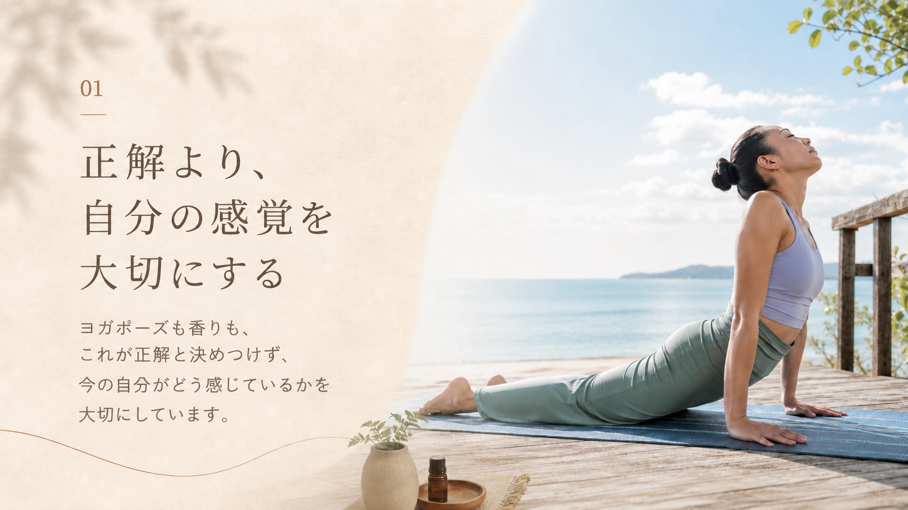
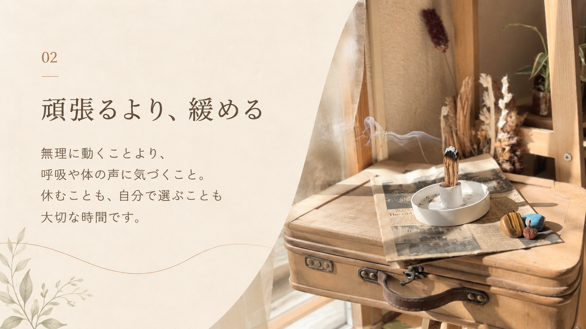
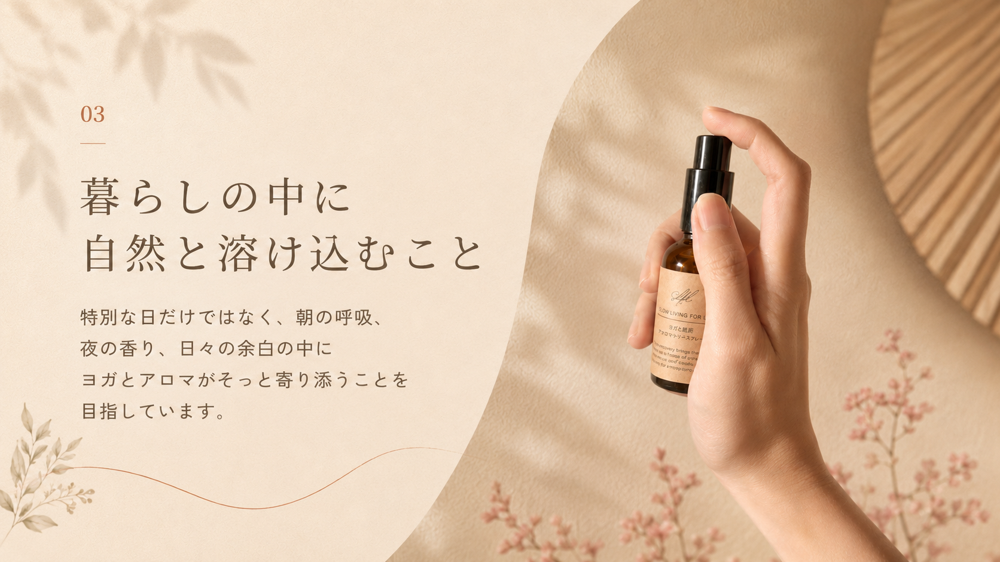
Voice
参加された方の声
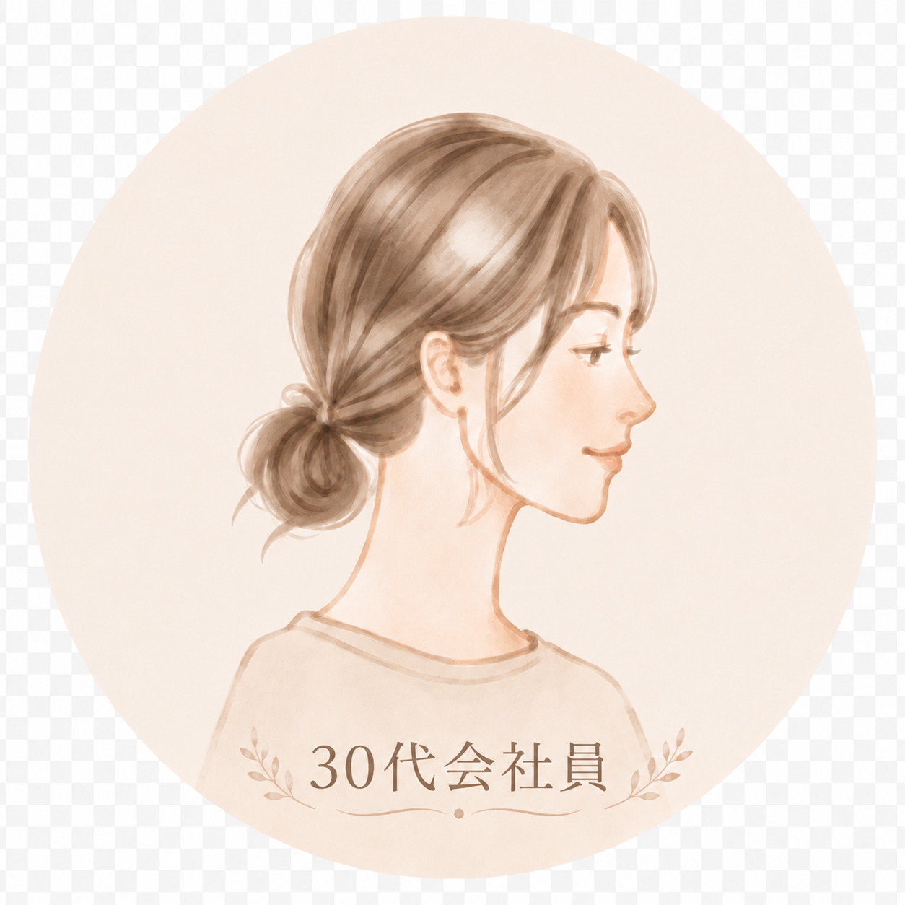
身体が硬くても安心体の硬さや腰の不安があり、ヨガに自信がなかったけれど、YUKIさんのヨガは無理なく参加できました。温かい声かけに心も軽くなり、終わった後もアロマの香りで余韻を楽しめました。
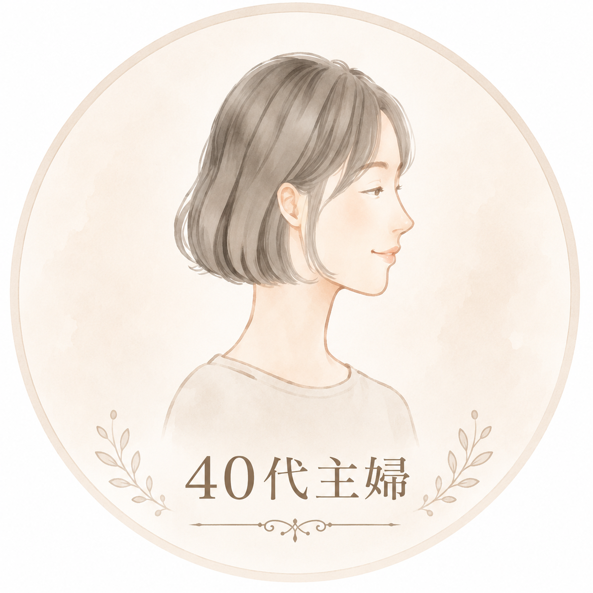
無理に合わせなくていい以前はヨガで周りに合わせるのがつらく、続けられませんでした。YUKIさんのレッスンでは、自然体で自分の体に向き合っていいと思えて、毎回心も体もリセットされています。
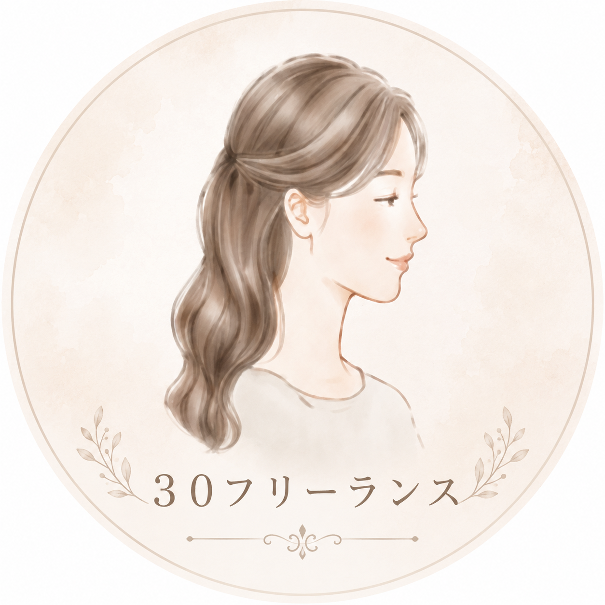
心と体がリフレッシュ仕事のストレスや疲れが溜まっていた時に参加し、とてもリフレッシュできました。人と比べずに過ごせる温かい空間と、優しい声かけに癒されました。
初めてでも、体が硬くても、今の自分のままで大丈夫。ここは、頑張るためではなく、緩むための場所です。
YUKIプロフィール
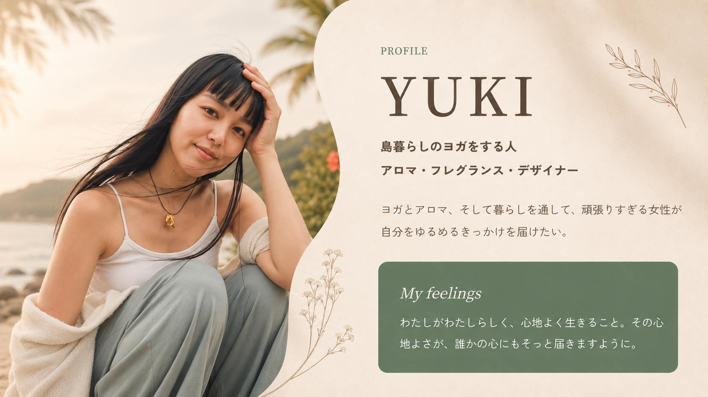
わたしのストーリー
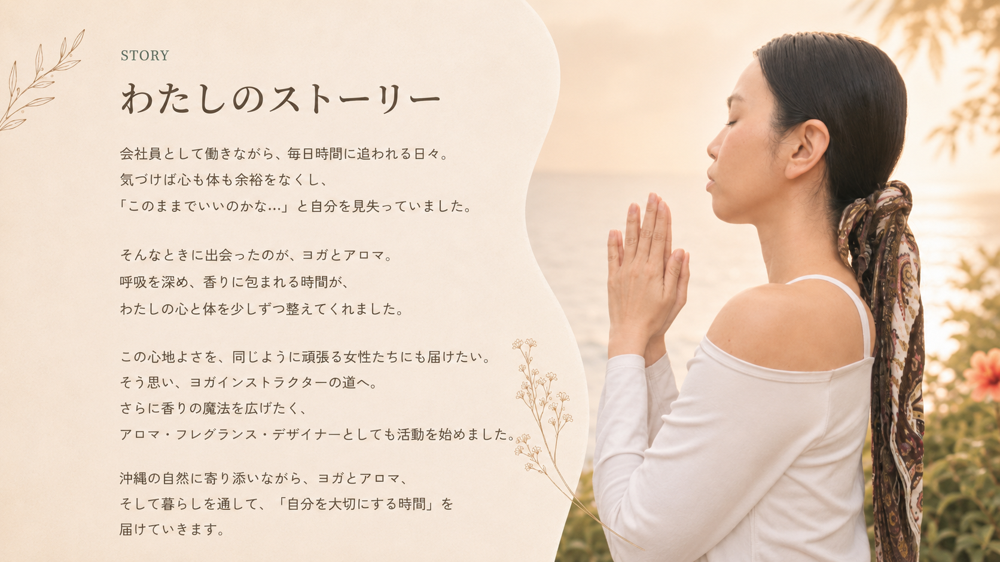
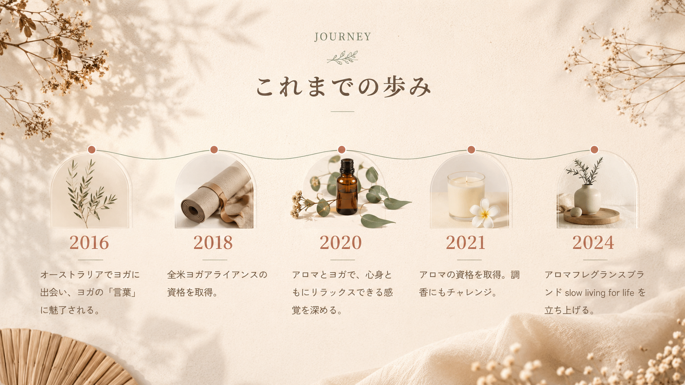
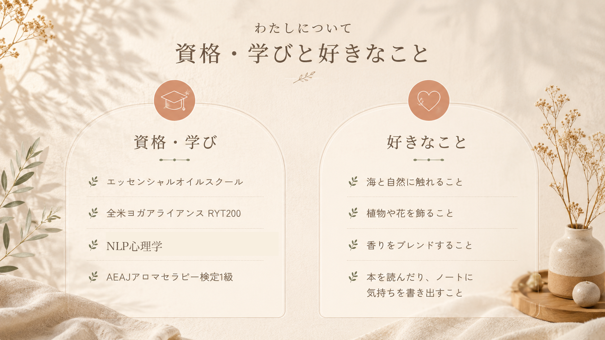
Connect
今のあなたに合う入口から、
つながってください。
今日の自分に必要なものを、ひとつだけ選ぶように。
ヨガでも、香りでも、言葉でも。
Breathe, Let go, Be you
深呼吸できる場所が、
ここにあります。
今日の自分に必要なものを、ひとつだけ選ぶように。
ヨガでも、香りでも、言葉でも。